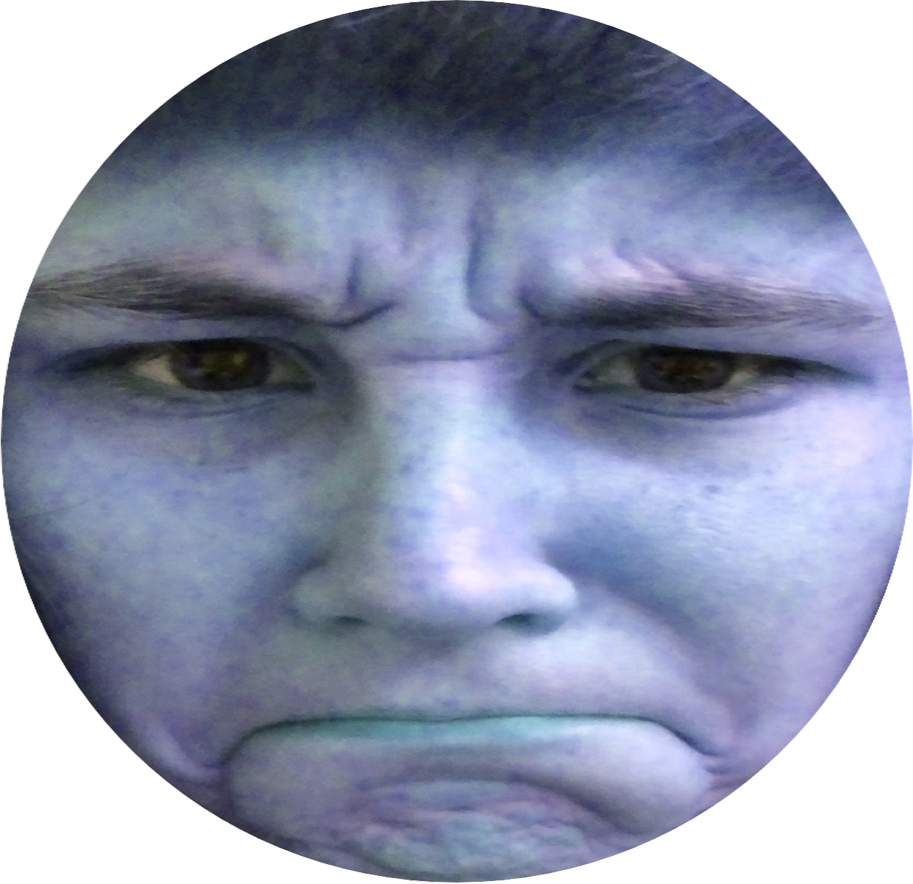

<#macro myLayout title="Layout example">
<!DOCTYPE html>
<html lang="en">
  <head>
    <meta charset="utf-8">
    <title>${title}</title>
    <meta name="viewport" content="width=device-width, initial-scale=1.0">
    <link rel="stylesheet" href="/assets/css/custom.css">

<body>
    <div class="container">
        
        <#include "header.ftl.html"/>
        
        <#if (flash.error)??>
            <div class="alert alert-danger">
                ${flash.error}
            </div>
        </#if>
        
        <#if (flash.success)??>
            <div class="alert alert-success">
                ${flash.success}
            </div>
        </#if>

        <#nested/>
        
    </div> <!-- /container -->

    <div id="errModal" class="modal">
        <div class="modal-content">
            <span class="close">&times;</span>
            <div class="picture">
                
            </div>
            <p class="errortext">Error! Invalid Move!</p>
        </div>
    </div>

    <div id="surrModal" class="modal">
        <div class="modal-content">
            <div class="picture">
                
            </div>
            <p class="modaltext">Too bad, you lost to a computer!</p>
        </div>
    </div>

    <div id="winModal" class="modal">
        <div class="modal-content">
            <div class="picture">
                
            </div>
            <p class="modaltext">You won!</p>
        </div>
    </div>
</body>
</html>
</#macro>